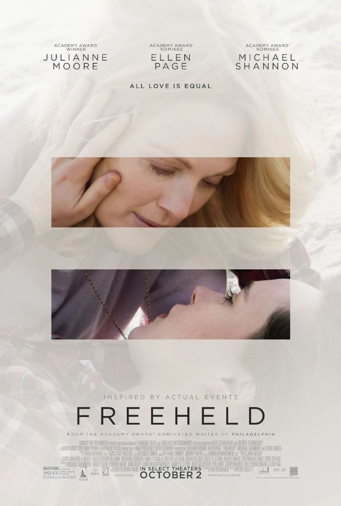
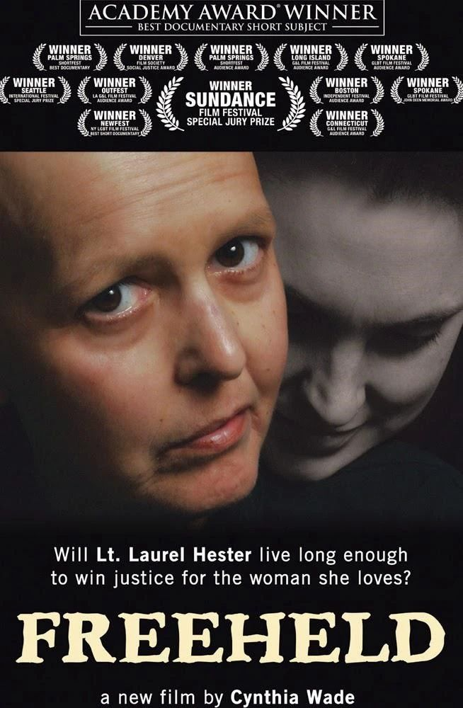

冒刺影院 | 同性婚姻平权之路：被拒人生
瓜瓜邀你来中心观影啦~
这周日还有十年一遇的日食噢！
或许可以带上观测眼镜一起看呢！

本周电影：《被拒人生》
Freeheld：All love is equal

剧情简介
由艾伦·佩吉（Ellen Page）和朱丽安·摩尔（JulianneMoore）主演。汽车维修工泰西·安德里与警探罗拉·海斯特是一对同性恋人，她们在一次排球队活动相识相爱，共同贷款买了房子，过着互相照顾、安静幸福的生活。不幸的是，罗拉被诊断出晚期肝癌，深受打击的泰西坚持两人能捱过难关。但更为现实的劳瑞尔意识到，如果没有自己的收入，泰西一个人是保不住房子的，于是她想要把养老金转到女友名下，但这一申请遭到了立法委员的拒绝。于是，罗拉开始拖着日渐衰弱的身体各处奔走，为自己和女友争取应有的平等权力。
影片根据真实事件改编，女警官罗拉·海斯特（Laurel Hester）于2006年2月18日因患癌症去世。在25年的职业生涯中，海斯特曾调查处理过许多犯罪案件，而在她去世前与病魔抗争的一年时间里，为了将自己的养老保险转到同性伴侣名下所做的抗争，也使海斯特成为新闻人物。

同名纪录片《Freeheld》为海斯特去世前，导演辛西娅·韦德（Cynthia Wade）住在她家里长达几个星期内的过程中拍摄，记录了他在去世前的半年时间里向政府有关机构力争同性伴侣保险金的经过。一边是支持者们的集会和法庭上的辩论，另一边是海斯特与同性伴侣斯泰西·安德里（Stacie Andree）在家中面对病情恶化和生死离别。
时间允许的情况下，
我们将在放映完电影后进行纪录片的放映。
活动流程
1. 电影放映（105mins）+ 纪录片放映（40mins）
2. 映后交流（30mins）
活动安排
温馨提示
1. 鉴于政府疫情管控和机构人力资源紧张，本活动存在因不可抗力而取消的可能性。如遇活动临时取消，我们会提前通过本公众号通知，敬请谅解。
2. 请参与活动的小伙伴关注本地疫情发展，自行评估健康情况，做好自我防护，配合政府防疫政策，并出示杭州健康码。
3. 杭州同志中心所在楼宇增设访客登记系统，请参与活动的小伙伴携带有效证件（中国居民身份证等）进入楼宇。